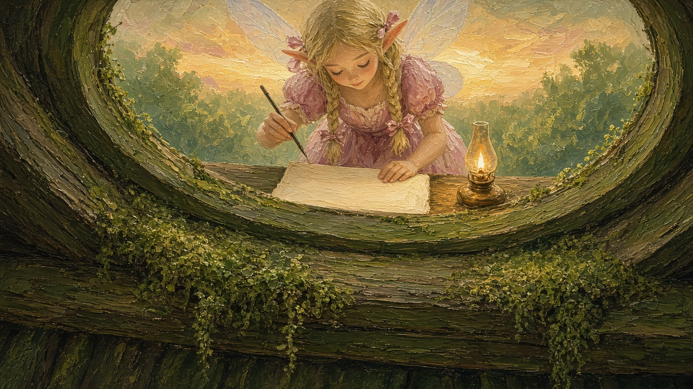
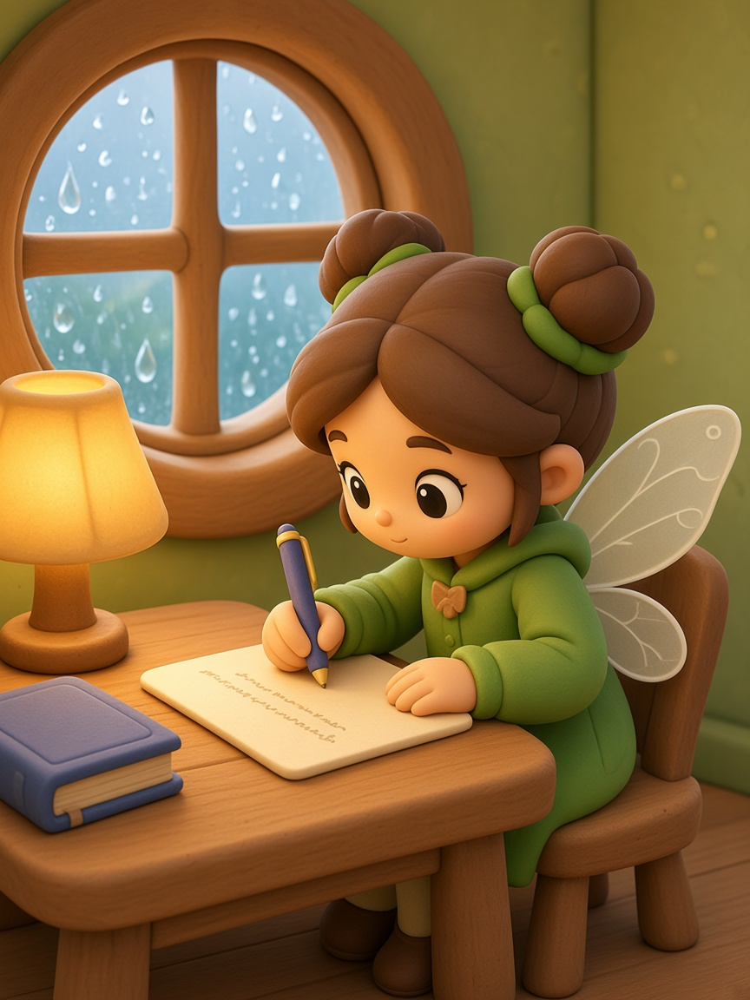
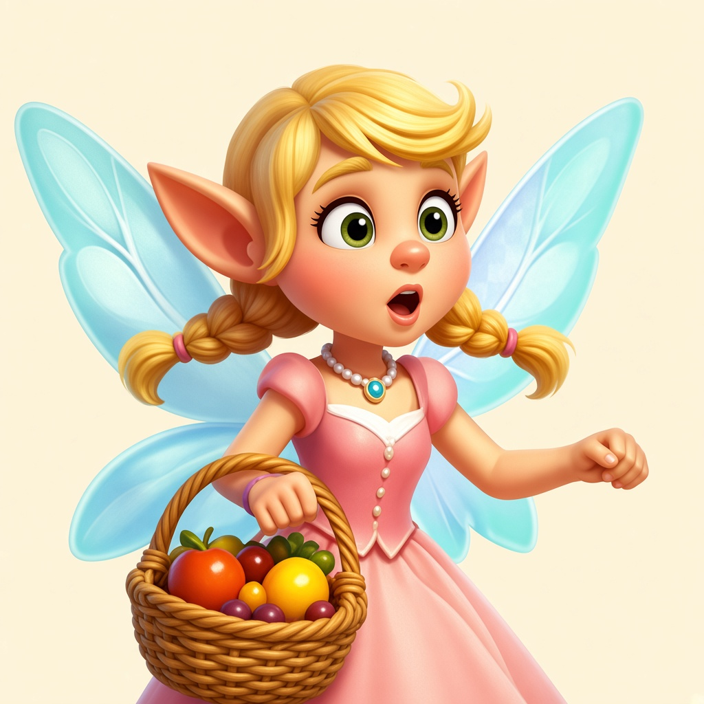
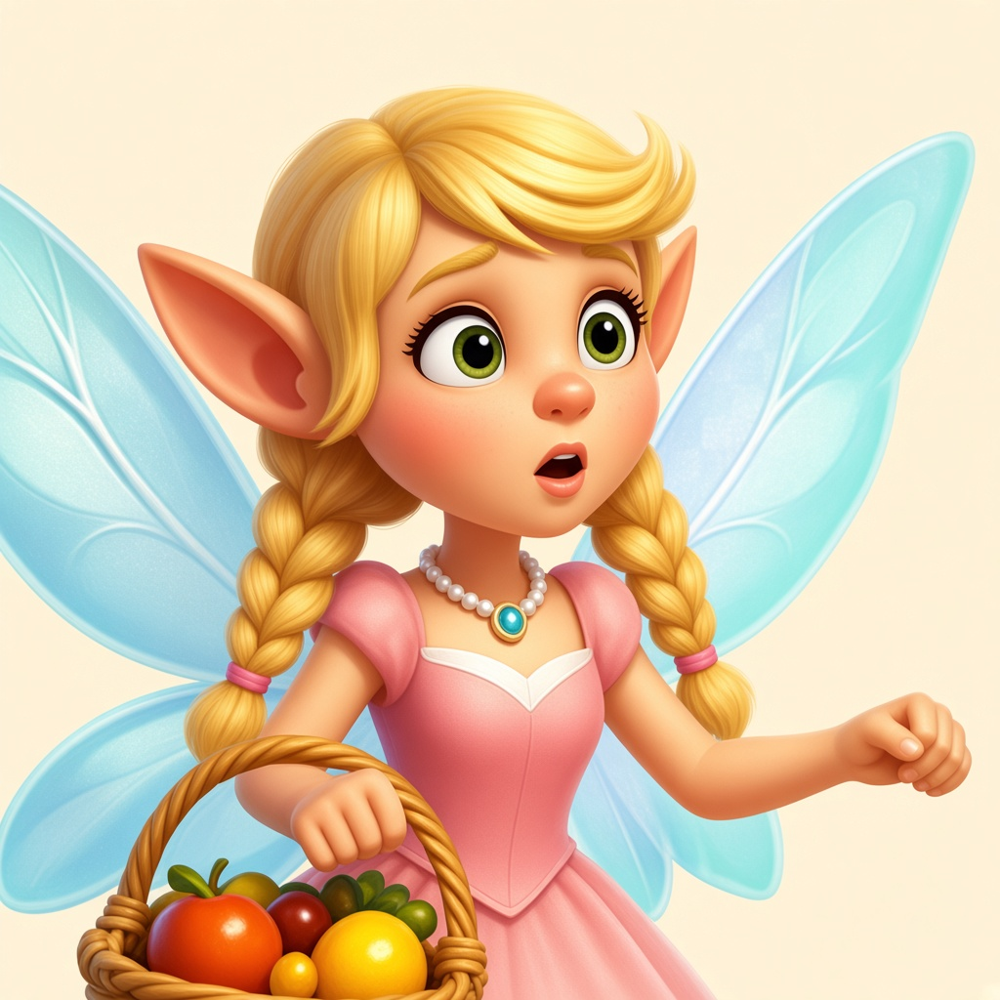
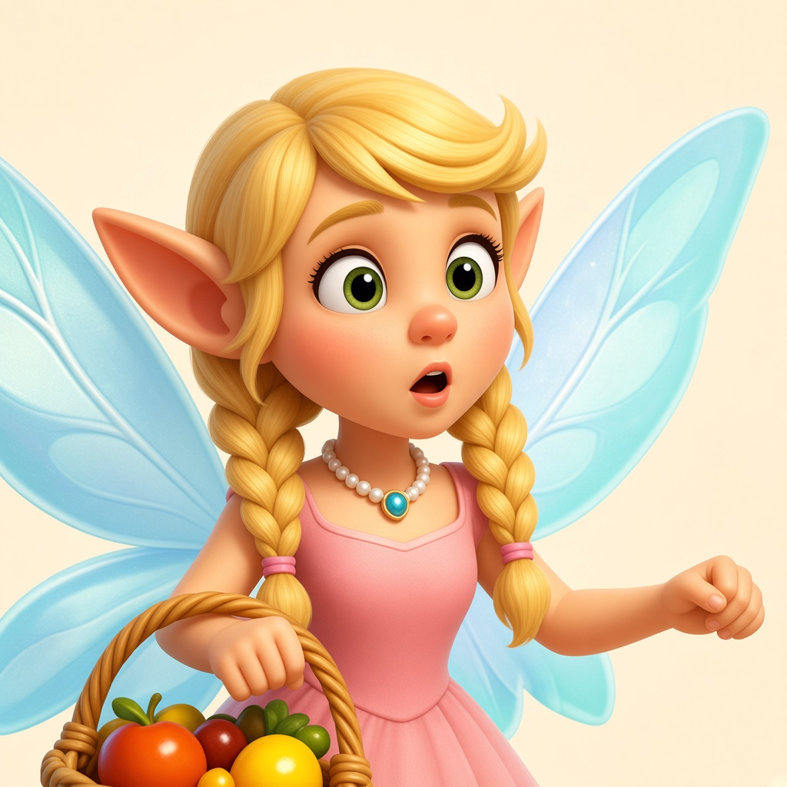
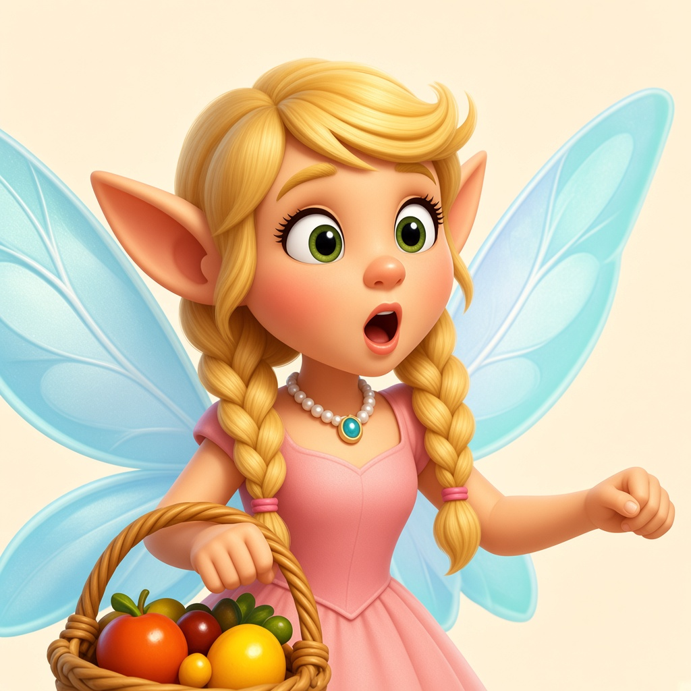
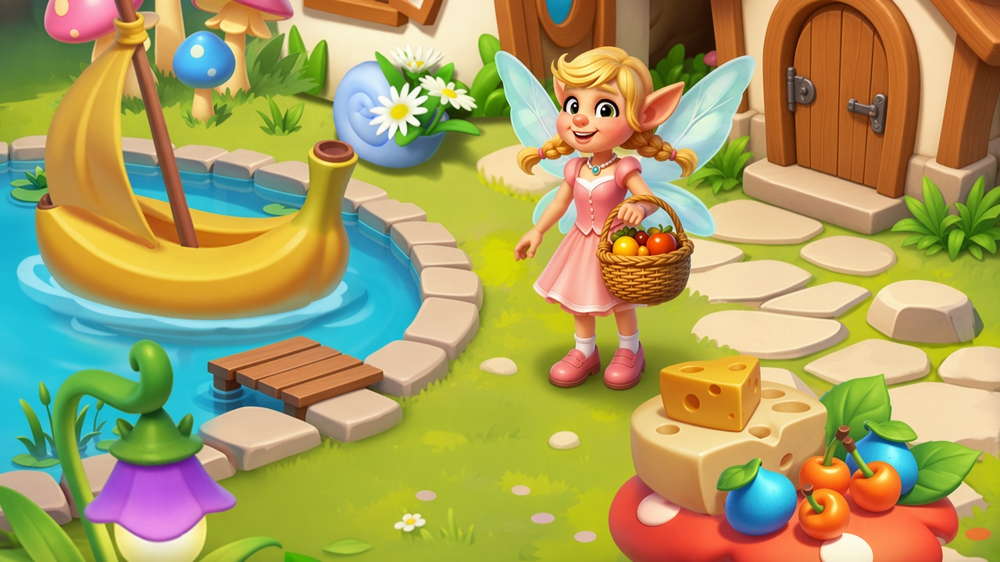
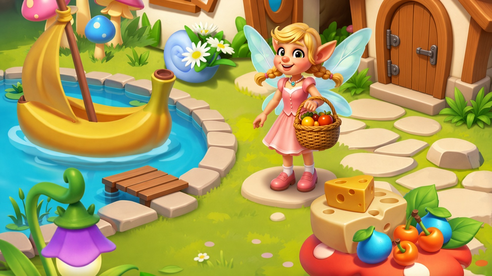
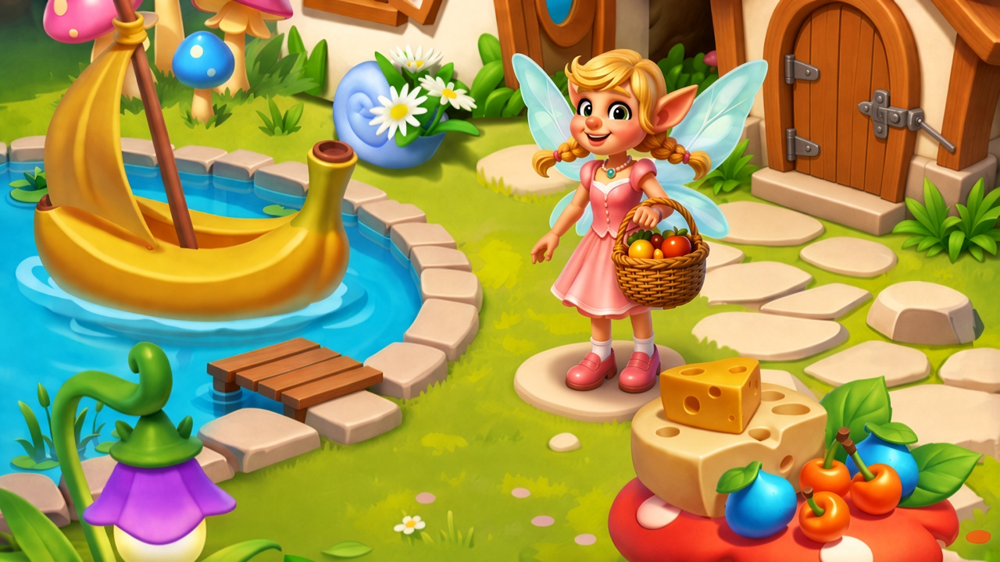

899s


62s
446s
15 支都已交回。出图闭环没有一支达到 9.5。生图调用合计约 2394 秒，墙钟从 14:35 到 15:02，各支并行。图标 B、图标 C 用的是清单分，不是 9.5 停机线。镜头包、提示词、锁风格按合同没有出图。
| 技能 | 变体 | 结果 | 最高分 | 各轮（分数 · 生图秒） | 终稿 | 墙钟 |
|---|---|---|---|---|---|---|
| 生图 | 普通图 | 未过 9.5 | 9.03 | 14:37–14:53 | ||
| 生图 | 原画 | 未过 9.5 | 8.88 |  | 14:35–14:52 | |
| 生图 | 克隆 | 未过 9.5 | 8.78 |  | 14:37–14:58 | |
| 生图 | 变体 | 未过 9.5 | 8.52 |     | 14:36–14:54 | |
| 生图 | 多图分工 | 未过 9.5 | 8.58 |    | 14:38–14:52 | |
| 生图 | 镜头包 | 不生图 | — | — | — | 14:36–14:37 |
| 图标 | A 桌面母版 | 未过 9.5 | 9.03 | 14:38–14:55 | ||
| 图标 | B 线性 SVG | 清单过 · 8.50 | 8.50 | — | preview.html | 14:38–14:53 899s |
| 图标 | C 道具格 | 批量预览 9.00 | 9.00 | 14:36–14:39 | ||
| 界面 | 全套 | 未过 9.5 | 9.32 | | | 14:38–15:02 |
| 合成梯 | 甜品店形变 | 未过 9.5 | 8.61 | | | 14:40–14:59 |
| 合成梯 | 喷壶同模加装 | 未过 9.5 | 8.94 | | | 14:42–14:53 |
| 合成梯 | 花园乐器 | 未过 9.5 | 9.09 | | | 14:41–14:55 |
| 提示词 | 三套说法 | 不生图 | — | — | — | 14:37–14:38 62s |
| 锁风格 | 样张卡片 | 不生图 | — | — | — | 14:37–14:45 446s |
| 看到的结果 | 说明 | 下次动哪一层 |
|---|---|---|
| 出图闭环 0 支过 9.5 | 最高落在 9.03–9.40：普通图 9.03、图标 A 9.03、乐器 9.09、概念 9.32、组件表 9.40。近优被停机线全部挡住。 | 停机线。近优交件和「必须 9.5」要分开写，否则满 4 轮仍一律未过线。 |
| 三条合成梯关系都第 1 稿过关，画面都卡在体量 | 甜品终稿退回第 1 轮 8.61，第 3 轮掉到 7.89。喷壶最高 8.94，第 3 轮回退早停。乐器满 4 轮 9.09，邻档仍不够陡。 | 出图提示词里的体量曲线。关系机读过了，不能当成像素档差已经过了。 |
| 多图分工只有关门态 | 关门最高 8.58，脚一直在石径旁的圆石上。合同要求第二态只垫已过线的上一张，满轮最高分进不了开门态。 | 多图分工的「通过」定义。满轮交件应允许作为下一态的垫图，或单独标明第二态未跑。 |
| 变体眼睛过了，嘴不过 | 四轮上眼睑都抬过虹膜，嘴一直是竖椭圆，最高 8.52。原句里的「换成」曾让路由 execute_ok 为假，补上「同一张脸，换个表情」才放行。 | 局部验收词要可测量，例如「嘴洞宽约等于鼻翼」。路由句不要用「换成」单独当变体信号。 |
| 克隆没抄回树屋，身份漂了 | 四轮都没有池塘、小船和巨叶框，最高 8.78。脸从兽吻漂到无翅小人，第 4 轮才有小透翅。手仍是连指。原图 169×276 与 3:4 差 18.4%，会话垫图必须加边。 | 克隆要另写身份锚，不能只写「不要沿用参考主体」。画幅差超过闸值时，加边文件和生图垫图不是同一张，报表里要分开。 |
| 原画守住了构图回声 | 样张没有垫进生图，四轮都不是巨叶框加池塘。最高 8.88，剩手指和信纸横线。 | 原画这一支的闸是有效的。继续抬分应只改手和纸面，不要把样张垫回去。 |
| 图标 A 第 3 轮断崖 | 安全区 7.6 时正式分直接取 7.60，第 4 轮回到 9.03。单张只要 16–21 秒。 | 门槛维的取分规则。它会把一轮打成断崖，报表要同时留下六维原分。 |
| 图标 B / C 的「过」和 9.5 不是一把尺 | B 用 899 秒交了 8 枚 SVG，一致性 8.5 标成通过。C 一张 30 秒，9.0 标成通过，喷壶仍像圆茶壶。 | 总表要写明尺子。批量预览的清单通过不能和闭环过线放在同一列里不加注释。 |
| 界面爬到 9.3 后几乎不动 | 概念 8.64 → 9.32，最后一轮只加 0.02，接触影仍短。组件表 9.14 → 9.40，按下态高度仍接近正常态。结构问题在前两轮已经修好。 | 第 4 轮只改接触影或按下高度。继续整张重画会把已经对的顶栏和主按钮冲掉。 |
| 锁风格在并行时没写完口味档案 | 三条记忆落在 brand.SkillRun20261110，耗时 446 秒。口味档案因为文件被占用跳过了。 | 并行全检不要同时写同一份口味档案。风格卡片本身可以独立验收。 |
| 提示词的风格默认离开了本趟文字风格 | 62 秒，三套都标普通图，正确地没有生图。没有风格句时落到水彩绘本，和全清单的软塑胶不是同一句。 | 全清单要给提示词一支同样的风格句，否则它会按品类默认另起一套。 |
| 整表生图比图标慢一个数量级 | 图标 A 单张约 20 秒。甜品整表两轮是 202 秒和 220 秒。乐器后两轮只有 17 秒和 21 秒，和前两轮的 79、70 秒差很多，计时口径不完全一样。 | 耗时表分开写「生图调用」和「墙钟」。后两轮极短的秒数要核对是不是只记了落盘差。 |
| 预览服务和 pyw | 用 pyw 开的 http.server 几秒就退出。改用 python.exe 后，18923 上的 preview.html 返回了 200。 | 看 SVG 预览不要用 pyw 起服务。 |
| 审图、归档、教练没有单独开跑 | 这三支不产生本页的成图。上面的表就是这批结果的审读。现在跑归档会把这些过程图扫进总图谱。 | 要进图谱时再点名归档。教练看的是跨次进步，不替代这张结果表。 |